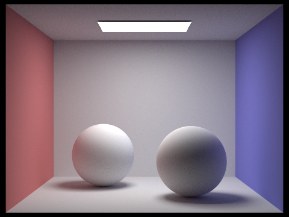
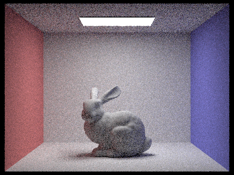

Link to Site: https://cal-cs184-student.github.io/sp22-project-webpages-doinksta/proj3-1/index.html
In the rendering pipeline, we first implement a function called generate_camera_ray that is generating a camera ray given a point in image space. This is done by generating rays from an origin in camera space to an image coordinate, and transforming the ray into world coordinates. Then, that function is called by raytrace_pixel, which then generates a number of rays for a pixel, and then averages the radiance samples to get a pixel value. At this point, it just averages what test_radiance_global_illumination outputs, which checks whether or not the ray intersects with anything in the bvh, and since we hadn’t implemented that at this point, it just returns the direction of the ray. However, we want our scene to render objects, so we must calculate some primitives, such as triangle and sphere intersections to get where in the scene we intersect objects. Then, after we implement such steps we can render basic scenes, but only with normal shading.
Explain the triangle intersection algorithm you implemented in your own words.We used the Moller-Trumbore algorithm which is an optimized version of the ray-triangle intersection algorithm. It ultimately finds the solution of the ray triangle intersection based on barycentric weights of the points of the triangle. It does this by computing 5 cross products (as noted in the slides), and using those cross products in a formula derived by using Cramer’s rule and the determinant of matrices in order to solve the linear system to get t, b_1 and b_2. Then, we used those coefficients b_1, b_2 and 1-b_1 and b_2, and if they’re all positive, then we know it’s inside the triangle, and substitute t back into the ray equation to get the point of intersection, and if there’s any negative terms, then we know it’s outside of the triangle and don’t return an intersection.
Show images with normal shading for a few small .dae files. |
|
The BVH construction algorithm recursively builds a tree by first constructing a bounding box around all of the objects passed in, and then checking if the leaf node condition is true, which is if the number of elements in the list is less than some max_leaf_size. For our BVH construction algorithm, we picked the axis that had the largest range in values, and then grabbed the average value as our splitting point. If it’s not a leaf node, then we partition all the objects by this splitting point, and then recurse on the two lists.
Show images with normal shading for a few large .dae files that you can only render with BVH acceleration. |
 |
 |
BVH acceleration greatly improves the runtime of rendering, especially when the geometries involved are complex. For example, when rendering meshedit/maxplank.dae, the system took 66.18 seconds to render without BVH acceleration, but took 0.045 seconds to render with BVH acceleration. Similarly, when rendering sky/CBLucy.dae, the system took 183.39 seconds to render without BVH acceleration, but took 0.0326 seconds to render with BVH acceleration. BVH acceleration is able to achieve this speed-up because it avoids doing an exhaustive test over all primitives in the scene when doing ray intersection, but rather finds the proper leaf nodes in the BVH tree that could intersect the input ray. As a result, the number of primitives tested per ray is drastically reduced, as these results show.
Direct Lighting only considers light that came from one bounce from another lighting source. What that means is at every single ray-object intersection, you check if it is lit by any light. This is where the two approaches differ - the direct lighting with uniform hemisphere lighting will sample a random angle on the hemisphere, and then cast a ray in that direction. If it hits an object, then you get its emission. If the intersected object is not a light or the ray doesn’t intersect with anything, then it won’t emit anything and return 0. However, if it does hit an object, it will return the emission of that object, and with that, we can calculate the emitted radiance of the object by sampling its BRDF (in this case, diffuse Lambertian), multiplied by the incoming radiance and Lambert’s cosine law, then divided by the probability of sampling that light over the PDF which is 1/2pi. The importance sampling is more effective in the sense that we will never sample space that doesn’t have light as we did before. Instead, we loop over all of the lights in the scene, and sample a radiance. We grab M samples of each light, and for each light, we check if that light intersects the object by casting a ray and checking the distance between the light and the intersection. If it is less, than we know we are in a shadow, but if it is, then we calculate the radiance reflected by the object by doing the same as above, except we divide by the pdf of that particular type of light. In the case of a point light, we don’t need to grab M samples, and instead just sample it once, since the pdf is 1.
Show some images rendered with both implementations of the direct lighting function.| Hemisphere Sampling | Importance Light Sampling |
| 1 | 4 | 16 | 64 |
Uniform hemisphere sampling is noisier because for some pixels, you may sample no light at all since all directions may not intersect with a light source. We find dots with fluctuating luminances next to each other in some of our images with uniform hemisphere sampling since we average over samples that don’t contribute to the radiance estimate. For importance sampling however, every point samples the light if it has an outgoing ray that hits the light, so there is less noise in the image, and it ends up looking smoother in a local field around a point.
We first modify the top level function call, est_radiance_global_illumination to call at_least_one_bounce. Inside of that function, we first call one_bounce_lighting, which gets the direct lighting for a given object. Then, we want to recurse on the remaining bounces of light, but we first need to decide on a termination criteria. We set the ray depth equal to a max_ray_depth in ray_trace_pixel, and we subtract the ray depth by one each time we call the function on the ray. We check the following two conditions are true: flip a coin with the probability of 0.7 of continuing, and check the ray depth is not zero. If true, we want to recursively call the function at_least_one_bounce on the intersected point and the outgoing ray at that point, and multiply the returned radiance by the cosine between the normal and the outgoing ray, the brdf at that point, as well as divide by the probability of sampling that angle and the continuation probability. We then return the additional bounces of light added with the direct light.
Show some images rendered with global (direct and indirect) illumination. Use 1024 samples per pixel.|  |
| Direct Illumination | Indirect Illumination |
| Max Ray Depth 0 | 1 | 2 | 3 | 100 |
 |
 | ||
| 1 | 2 | 4 | 8 |
| 16 | 64 | 1024 |
For our implementation of adaptive sampling, we adjust the raytrace_pixel function in order to sample adaptively - i.e. end the loop early if the variance of the image pixel samples goes down or the number of samples is large enough. That logic is summarized in the metric of 1.96 * standard deviation / sqrt(samples), and we want to check if it’s less than a max tolerance around the mean. So, we use a streaming version of calculating the mean and variance, and then for every samplesPerBatch, we check if the above condition is true, and then we end the sampling there for that pixel. Then, we set the rate image equal to the number of samples we used.
Pick one scene and render it with at least 2048 samples per pixel. Show a good sampling rate image with clearly visible differences in sampling rate over various regions and pixels. Include both your sample rate image, which shows your how your adaptive sampling changes depending on which part of the image you are rendering, and your noise-free rendered result. Use 1 sample per light and at least 5 for max ray depth. |
|
| Image with 2048 adaptive samples | Rate Image |